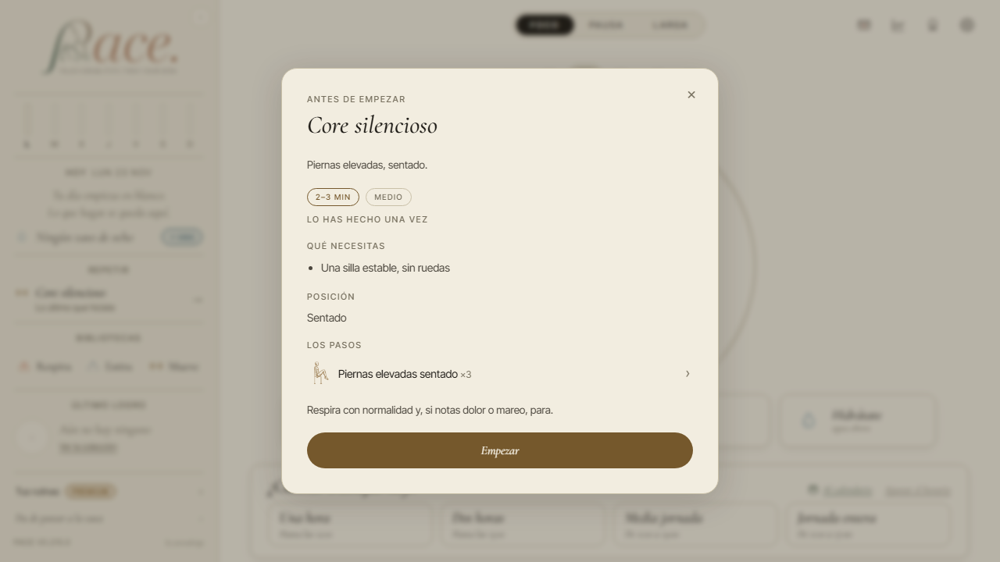
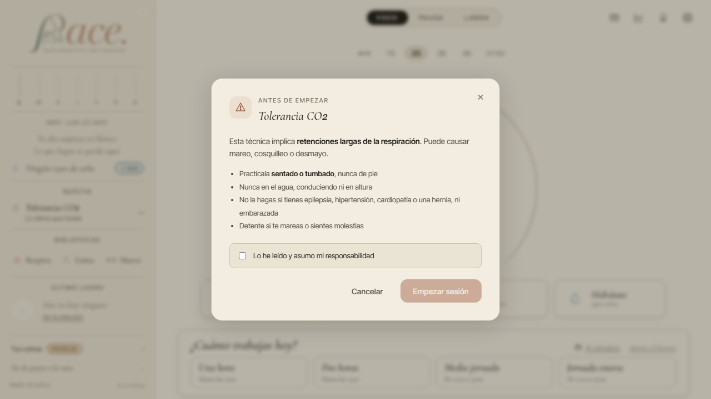
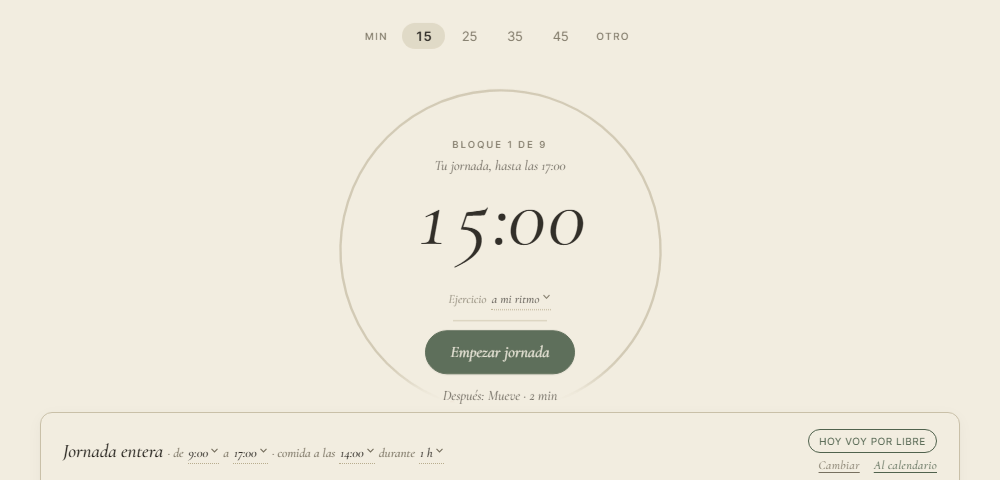
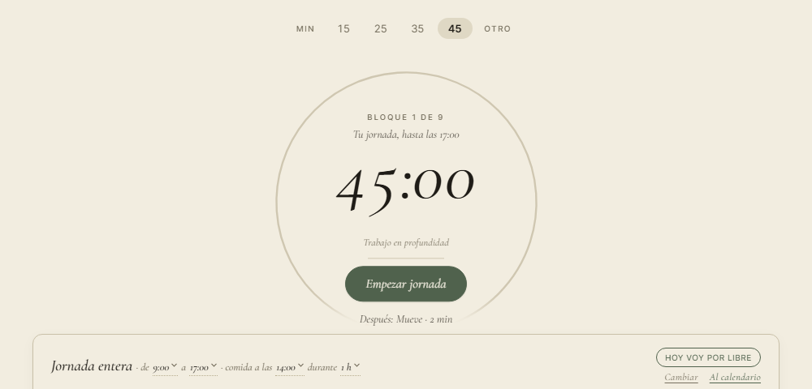
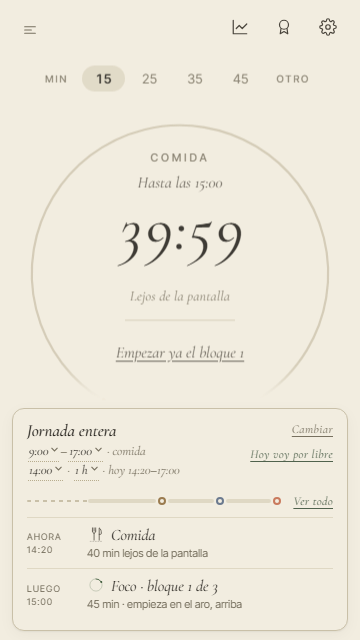
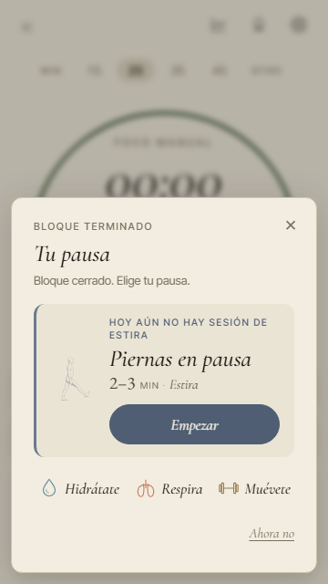
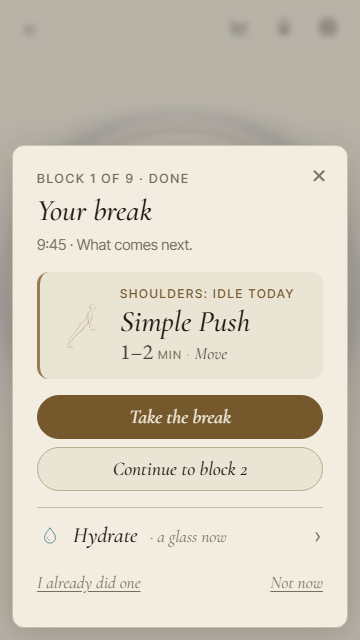
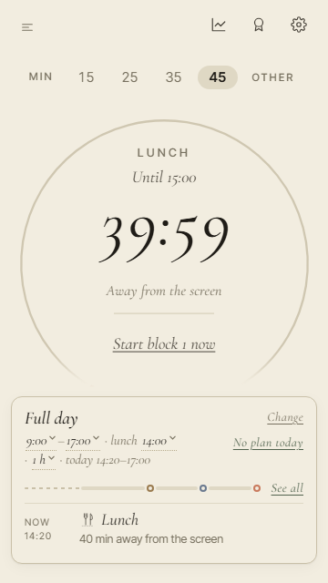
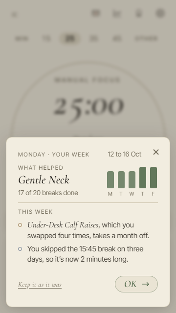

23 nov. 2026 · lo que las cazas del 22 nov. no miraron a fondo · rama claude/caza-huecos-23nov-ed3e34, sin juntar
Cuatro hallazgos. Dos arreglados en la rama, cada uno con su prueba que cae en main. Dos esperan tu letra.
Hoy no se nota ninguno de los arreglados: el de la compra solo se vería desde v1, y el otro es la voz.
1 · Desde v1, «Repetir» abría rutinas de pago sin PACE completo
GraveArreglado
Con PACE cerrado (v1) y la semana de prueba acabada, la tarjeta de la barra lateral ofrecía repetir la última rutina aunque fuera de pago, por ejemplo una hecha durante la semana de prueba. Al tocarla, Mueve y Estira llegaban a la sesión y Respira, a su aviso de seguridad. La sugerencia ya miraba si se puede abrir; «Repetir» no lo miraba. Pasaba también con «Continúa» en una Respira de pago a medias.
Ahora la tarjeta no ofrece lo que no se puede abrir: en su sitio sale la sugerencia, como antes. Las que se quedan de antes de v1 se siguen ofreciendo. Prueba: tests/v1-repetir-de-pago.spec.js. Commit 912a9069.

Antes: Core silencioso (de pago), abierta desde «Repetir» con PACE cerrado.

Antes: Tolerancia CO₂ (de pago), en su aviso, lista para empezar.
2 · Con el día servido, los minutos que eliges se deshacen al minuto
MediaEspera tu letra
Con la jornada puesta y el bloque sin empezar, tocas 15 encima del aro: el aro pasa a 15:00. Al minuto, sin avisar, vuelve a 45:00. Si empiezas dentro de ese minuto, el bloque dura 15 y el día se recoloca bien. Si tardas un poco más, el bloque dura 45. En plena comida pasa lo mismo: marca 15 y «Luego» sigue diciendo 45 min. Por libre no pasa: tu elección se queda.

9:00, tocas 15.

9:01, sin tocar nada: vuelve a 45.

En la comida, a 360 px: 15 marcado y «Luego» dice 45 min.
RecomendadaA · Lo que eliges se queda hasta que empiezasEl aro deja de volver al minuto. El bloque dura lo que elegiste y el día se recoloca al empezar, como ya pasa si empiezas a tiempo. Al acabar ese bloque, el siguiente vuelve a medir lo del plan.
B · Con el día servido, los minutos no se tocanLos chips se ven apagados mientras hay un día servido; para cambiar la duración, «Ajustar el horario». Es más claro, pero quita una elección que hoy medio funciona.
3 · Sin «Auto», el lado derecho empezaba mudo
LeveArreglado
Con «Auto», al cambiar de lado la voz dice «Cambia» y luego «Derecha». Sin «Auto», el lado izquierdo empezaba con «Izquierda» al tocar «›», pero al tocar «›» para el derecho no sonaba nada, con «Derecha» en la pantalla. Ahora suena «Derecha», una vez. Prueba: tests/voz-lado-sin-auto.spec.js. Commit 7be19057.
4 · La pausa por libre dice dos veces que el bloque acabó
LeveEspera tu letra
Desde la 3A, arriba pone «BLOQUE TERMINADO» y, dos líneas más abajo, «Bloque cerrado. Elige tu pausa.» Con la jornada no pasa: allí pone «Bloque 1 de 9 · terminado» y debajo la hora y «Lo que viene».

Por libre, a 360 px.

Con la jornada, en inglés y con la letra al 115 %: sin repetir.
RecomendadaA · Debajo, solo «Elige tu pausa.»«Choose your break.» en inglés. El rótulo de arriba ya dice que el bloque acabó.
B · Dejarlo como estáLa repetición es pequeña y la ventana se entiende igual.
Mirado y sin fallos
La voz del runner, de principio a fin, en tres rutinas con «Auto» (en castellano y en inglés) y una sin él: números, «Colócate», «Izquierda», «Cambia», «Derecha», «Descansa», «Último paso» y el final. Pausar, volver con 3-2-1, saltar dos veces seguidas, volver atrás y salir a mitad, a 390 px: la voz se calla y no se apila.
La compra apagada en las apps: en Android y en el iPhone no entra ningún código (ni escrito ni por enlace) y la tienda está apagada; con PACE cerrado, la biblioteca, la pausa, el día servido y la sugerencia miran si se puede abrir (leído en el código; probado en la app, el 1). El único hueco que encontré era el 1.
Ajustes, uno a uno (21 controles en castellano y en inglés): cada uno cambia lo que dice y se guarda al recargar. Con el sonido apagado, la voz y lo que suena detrás quedan sin tocar, como deben.
Lo nuevo de la 0.215.0 (la comida en el aro, «Bloque terminado», la ventana de la comida), a 360 × 640, en los dos idiomas y con la letra al 115 %: nada se corta y nada pide scroll.
El Foco de la jornada con la página congelada (como un móvil que duerme la pestaña), a 360 px: al volver a las 9:50 sale la pausa con lo que le queda; a las 11:00 y a las 15:10, el aro está en el bloque que toca. El bloque cuenta una sola vez (45 min).
La carta del lunes entera (la semana del registro, la carta, «Vale» y la home después), a 1280 × 720 y a 360 × 640, también al 115 %: cabe sin scroll.

La comida en el aro, en inglés al 115 %.

La carta del lunes, a 360 px al 115 %.
Sin mirar
El Foco con la pestaña oculta en un móvil de verdad. Simulé la página congelada y va bien, pero lo que hace de verdad un navegador con una pestaña dormida solo se ve en el teléfono.
El calendario en Android y conectar el calendario en la web. Uno necesita el teléfono y el otro, las altas de Google y Microsoft, que siguen sin hacer.
La miniventana al acabar la pausa de la jornada (3A), en un Chrome de verdad: la del ordenador sigue pendiente de que la pruebes tú.
Linux: no medí los textos en Linux. Nada de esta rama cambia textos.